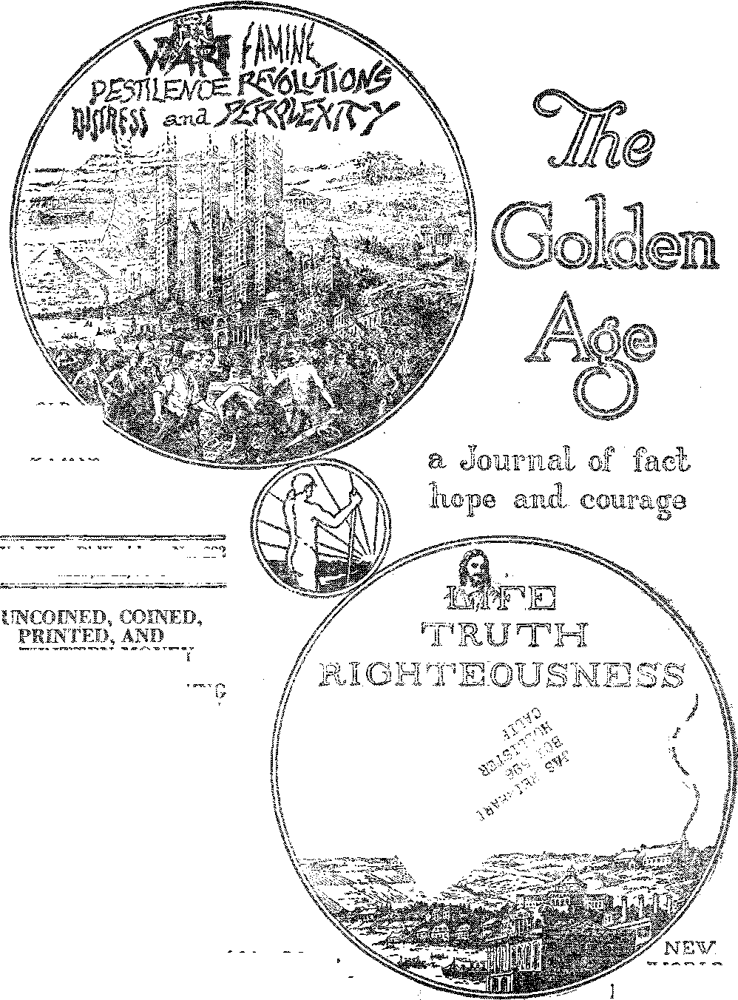

OLD Yl
VWlLD ' DYING
RECONSTRUCTION
$ '100 a Year
Canada and. ForeigiaCouiliries $ £50
ALUMINUM POISONINI
AT PUNXSUTAWNEY
THE STAR THAT
GUIDED THE MAGI
WHAT ABOUT THE HEATHER?
WORLD
BEGINNING
5^ a copy
VoL IX Bi-WeeWy No. 222
March 21,1928
j-< .............< Labor and Economics It
Bits of tits World's News ......... . . - . . . 393
Pitiful ’Condition of British Miners ............ 393
Vast Hordes ot Unemployed .............. 394
' CogI Mining in a Baft Way .............. 394
Eight and One-half^ Million Women Workers .-. . .... 396
ss„: ' ■ ' SOCIAL AND EdVCATTONAL ’
Safety of Ford Planes .......... 393
Perils to Children .................. 394
Horrible Famine in China ................. 395 Items Relative to Radio ........... .... .... 395
||||||||ggs fiti®|||||l||||||:|’
Coinkb^.....Oi'NW|ssAO::Wsi®iN......itOiWII. ■ ' .■ . :K::l5’svs:...........
Origin of the Dollar ................. 388
The Making of Paper Money .............. 390
Redion in Size of Bills ............... 891
Ihcomes ar a Million os Mose ............. 398
Political—Domestic and Fort-.ion
British and American Taxes ......... 393
111 Witt ■ I . . ||| llllll,|: ||l:;. |||||i||||95
A. Cry Heard Around the 5V<wl<j ............. ilDtf lUiy’s Mew Penal. Code ................. 8I>3
Home and Health .
Aluminum: and Incbeasud Stomach Tboubi.es ........ 397 ®m Aluminum PoisoNnto at Punxsutawndt ........ 397 siiill'MoBB AbouSs-Ba^bi^^'Bakk .................................. ,s . . . . . . . .398
BWGIOJT AND X’niLOSOPHY
:BstW^RtICTI0N||®MSt|:i': . . • ss||:s|:s::lsss:.:ss .... . s,.y.sg99
IWhat/About Part 5:g:yl«||||« |. . . . .s''|s.s'. syryioS
Camden Has a Boom in Religion ............. 407
Doctob Hawkins Dtstutbs Cubist ............ 407
.Tas Stab that Guided ths Magi ......... 408
The Risen Lord (Poem) ................ 408
When the Dbsebt Blossoms as the Rose! ......... 409
Bible Questions and Answers .............. 413
Studies in :ist. ................ . 411
Tins Children's Own Radio Stow ............ 415
Published every other Wednesday sr. 117 Adams Street, Brooklyn, N. Y., XT. S. A... by . WOODWORTH, KNORR ft MARTIN
tfoporttiefs and Proprietors AdSreas: lit Adotsts Street, Brooklyn, V. T., U. S. A. CLAYTON J. WOODWORTH . . Editor ROBERT J. MARTIN . . Business Manager ■ NATHAN H. KNORR . . SePy and Treas.
Pive Cents a Ccwt—$1.00 a Yuas Maks Remittances to THS OOIjDSS ASS Notice to Sittaoriber®.- We do not, as a rale, sens! a card of acknowledgment for a renewal or for a new subscription. A renewal Wank (carrying notice of expiration) wil> be sent wish she journal one mc-rstb before the subscriplion expires, Change of address, when requested. may be expected to appear ou address label witbin one rnoolh. VOKEION Ovbtces: rlrttixk .... 34 Craten Terrsce, Lancaster Gate, London W. 2 .....................................st..... sSSSsS/s O<m:fl<liftSiSjsy.:y5ls» ..... 40 Irwin Avenue, Toronto 5, Ontario ssssssssssssssssSss ss AustralaS'iiin 405 Collins Street, Melbourne, Australia
Sotsfr. Aj'rieatt, ...... f Lede gs-cri, Cape Town, South Africa
Bnteredsas <seeoiid-clas#s mattersafe Brooklyn, N. Ysrsunder the Act o£ March 3, 1878
VoJrama DC Brooklyn, N. Y,,s WWaesday, Mareft 2?, 1928 Number 222
Uncoined? Coined, Printed, and Written Money
FROM the time of Abraham uncoined silver money was in general use in Egypt- an<l Canaan. Inscriptions on the monuments show that this silver was kept in the form of rings. As it had to be weighed when its value was to be determined, it is presumed that the ring money first in use was not of any settled weights.
The four hundred shekels of silver, current money with the merchant, which Abraham weighed to Ephron for the cave of Machpelah were no doubt the rings of silver such as are shown on Egyptian monuments. Survivals of this form of money are to be found in the rings, earrings, bracelets, etc., which, are still in more or less common use.
The earliest distinct mention, of coins in the Bible is in Ezra 2:69, where the Persian daric is mentioned. This is fifteen hundred years after Abraham’s time. It is in this interval that coined money had .its rise. It is probable that it originated with the Chinese.
The first money in use in China is called sword money because of its general resemblance to a sword. It was of about the size and shape of a key to a modern lock, with, a square hole in the hilt or handle. Eventually the blade -of the sword was dropped and the remainder is in circulation in China to this very day, a round coin, witih. a square hole in it, a cash.
The directness and honesty of the Chinese mind is brought to light by the earliest samples of their coins which have been discovered. These coins showed by their shape that they were intended to represent swords, spades, garments or other articles and were thus tokens of actual values which were also stamped upon them.
The word money comes from a building, the Moneta building, ©f anoie^t Rome, in which were stored the precious metals taken from on© of the armies which the Roman legions conquered. This building was turned into a mint and accordingly the currency which was there manufactured was naturally called Moneta, whence comes the French nian/naie and ths English money.
Haw Coins Came to He Used
‘OURS, grains and shells have all served -L their turn as money. Opium passes for money in some parts of the world. Bricks of tea are acceptable in Mongolia. Cowrie shells are still, current in Siam and beads in parts of Africa and Oceania. Gold is the currency of war.
In Rome the first, currency was based on the bronze as or aes, which weighed a pound. It was the value of an ass. Live stock often figured in early money values. The word pecuniary comes from the Latin pecwiia, and is derived from pecu, meaning cattle. Obviously, in a live stock transaction, it was an advantage to a buyer or seller to be able to carry in his pocket the equivalent of an. ass or an ox, and not be obligated to have the creature itself actually with him.
In Greece the first money was in the form of small bars of silver. Six of these could be held conveniently in one hand, so drachma? a handful, was applied to the standard coin of the Greeks. Other coin values were divisions of the drachma.
The first monarch whose portrait can b@ recognized on. coins was Alexander the Great. Indeed, our only knowledge of the features of Alexander the Great and many other important personages of history is derived from coins.
_ The word coin is from the Latin cuneus, a di@ , or stamp: the word cash is the Hindu word for ■ coin.
The Greeks made the finest wins of antiquity. The coins were “struck”; i. e., a blank was placed between two dies, the lowmr let into ar anvil, producing the obverse, the other in the end of a bar, producing the reverse. The bar was then hammered so that the blank received, at the same time, the impression of both dies. Most of the dies which have been found are of bronze, but some are of iron and steel.
The First Greek Coins
HE first Greek coins of note were made of electrum, a natural alloy of gold and silver found in considerable quantity in Asia Minor. They were minted about' 700 B. C. Crcesus at first minted electrum coins and subsequently divided the two metals. This was in 561 B. C. Croesus was regarded the wealthiest man of ancient times. Thirty of the coins which he minted just before his capture by Cyrus the Great have recently been found in his ancient capital of Sardis. They are as bright as new-minted United States gold coins, but are of lighter hue, as they are pure- gold.
On one of the earlier Greek coins there was stamped a tortoise. This was because the tortoise was a revered object. It was considered sacrilege to abuse or desecrate it in. any way. In the use of the tortoise the state authorities had a guard against counterfeiting.
The Greek and other ancient coins contain the best preserved representations of monarchs, gods and goddesses, temples, fruits, grains and other products of ancient times. Gold and silver gradually came to be the recognized mediums of exchange, because they comprised such great value in such little bulk. Gold was considered best of all, because of its durability, portability, divisibility and ease of recognition.
'During the ignorant and. barbaric period of human history known as the dark ages, money became practically unknown; but in the days of Charlemagne the general standard of value was fixed on the basis of the silver pound. Prior to that time, by several centuries, the British people had used the silver pound as the basis of their currency. The pound sterling was then about three times as heavy as now, and contained twelve troy ounces, or one pound of silver. The shilling was the twentieth part of this weight. The troy ounce is supposed to have been brought from Cairo during the crusades.
Origin of the Dollar
HE first dollars were made in 1486 in what is now St. Joachim’s Valley, Czechoslovakia.
The old High German name for a valley is thal, from which we get our words dale and vale. The coins there made by Graf or Count von Schlicken were about the size of the modern dollar and because of their high degree of purity soon became popular in every part of Europe.
Having 'been made in a, thal or dale they were first called Joachimthalers. This was subsequently shortened to thalers or dalers. In the sixteenth century, through trade with the Dutch, these coins became common in England, where they were variously known as dalers, dolors or dollars.
The Spanish thaler or dollar was the most popular coin in the 'western world for two hundred years, from 1650 to 1850. It was called “pieces of eight”, being of the value of eight reales. In English the term “'eight bits” was used, and in California the term “bit”, as representing 12^^, was in common use a g-eneration ago, and may be still for aught we know. The real was formerly the unit of the Spanish monetary system. .
The popular impression that the dollar sign is a combination of the capital letters IJ and S is not borne out by the facts, because the dollar mark as we have it was used by the Spanish long before there was any United States of America. As the Spanish dollar was of the value of eight reales, the dollar mark lias as its foundation the figure 8, the vertical mark being P for Peso, the Spanish name .for dollar. Peso of 8 became contracted into P8, with the P superimposed on the 8,
The American. Dollar
HE .American dollar was authorized in 1792 and although lighter than 'the Spanish dollar was accepted as equal in value until some clever financiers laid the foundation for one of the great American fortunes by exporting American dollars to the West Indies, exchanging them for Spanish dollars, melting the Spanish coins and having the United States mint
Mabch 2!. 1;>2S
Th. golden age
recoin the silver into .American dollars. Jef ferson stopped this by ordering the mint to stop making dollars, and the order remained in force from 1805 to 1836, when the weight and fineness of the coins were changed and coinage was resumed. '
At one time the American silver dollar was very popular, especially in. the South, where it was supposed, to be more valuable than other forms of money, and in the West, where it was supposed that its circulation helped the mining industry.
R 'eeiitly the Government made an attempt to repopularize the general use of the silver doRar, but the public has become accustomed to paper money and is unwilling to carry around, the extra weight. Oddly enough, it is cheaper for the (soverjimeiit to circulate silver dollars and lose the wear and tear on them than it is to circulate paper dollars and have to go to the expense of making new ones.
While the peso or dollar is no longer the monetary unit of Spain, yet it is still the unit of a large part, of the western world, Canada, Newfoundland, United States, Cuba, Mexico, British Honduras, Colombia, Chile, Argentina ami Uruguay. It is also the unit in Liberia, Africa, and in the Philippi ties.
The Work of Coinage
Queen Elizabeth lias been called, the 'mother of modern coinage’. The coins previously made had irregular edges and would not stack properly. She had the coins struck within a collar, made circular and with the edges milled, so that they would be uniform in appearance.
Any American citizen can take gold, to the United States mint and have it coined. The Government does the work at cost. The metal is first freed of all impurities, then hardened by an alloy, heated and rolled. The ribbons or bars of bullion, a little wider than the coin to bo made, are fed into a punch press where the blanks are cut, each, of which is to be made into a coin.
The blanks, ready to he coined, are placed in a huge machine, specially designed, which submi ts them to pressure from every di red ion, top, bottom and sides. This pressure of 275 tons perfects the coin and when it emerges from the machine it is ready for circulation. Other metals for other coins are treated in the same manner.
Id. the days of the California gold rush, bars of the metal which had their value stamped on them by the Government’s assayer passed as money. A little later many private coins wer® in circulation. These were retired by law in. 1864.
On all coins except gold coins the Government makes a profit, being the difference between Ilie actual value of the metal in the coin and its face value. This profit is called seigniorage. The Government thus makes a profit every time a coin is lost or destroyed, and hence it makes no laws against the total destruction of coins.
There is a hew, however, against the mutilation or defacement of coins, the object being to protect the public against the circulation of coms vdiicdi have been robbed of part of their contents and which can not therefore be submitted to the Government for redemption.
It is an interesting thing to know that if the wealthiest man in the United States should decide to turn all his property into gold dollars he could absorb all the gold coin in the country. The United States holds $2,500,000,000, or 30% of the world’s monetary gold.
An Avalanche of Pennies
TT IS estimated that from five to ten million pennies are lost in the United States every year. The making of new ones goes on by the million, but still there never seem to be enough to go around. To date over three and one-half billion pennies have been put in circulation, enough to make a train of 378 earloads of 30 tons each. Uncle Sam’s seigniorage profit on each $1,000 worth of pennies is $800. so he is not much worried over these lost coins. The number of those made last year was 176,000,000. "
Frank J. Conway, of De Witt, near Syracuse, N. Y., was ordered to pay $8.00 alimony every week to his wife Margaret. The first time he came to make his weekly payment he left a bag with. 800 pennies in it, but he found that would not do. Pennies are legal tender up to $5.00. .After that legal tender must be provided in some, other form.
The American one-cent piece and American dime are much, admired in other lands and,;, are considered two of the most artistic and beautiful coins in existence. We used th hav® a two-cent piece, about the size of a British penny, but it was always getting confused in dim light with the nickel and the quarter and when it disappeared nobody grieved.
The familiar motto, “In God we trust,” was placed on certain coins in 1865 and has remained there ever since.
The Government’s four mints are at Phila-'delphia, New Orleans, Denver and San Francisco. Last year these mints coined 310,980,019 pieces of American money, besides coining the money used in four South and Central American countries. .
A Few Numismatic I terns
NUMISMATICS, the collection and study of rare coins, has a fascination for many people, but not many of us can gratify our tastes in that direction. We consider ourselves well favored if we can get enough ordinary coins of the realm to keep the constable and the sheriff from being too familiar.
Petrarch, the Italian poet, who lived in 1374, was a famous numismatist. So was Henry VIII; so is King Victor Emmanuel III. One of the most notable exhibits in the Western world is the Morgan collection of United States coins, now in the custody of the American Numismatic Society.
The most comprehensive collection of coins, tokens and medals in the world is said to be the one nowT in. the National. Museum, at Washington, which Avas made for it by the Philadelphia mint, beginning Avith the establishment of the mint in 1792. The collection comprises 1,688 coins minted and used in the United States, Avith thousands of other coins, representing forty or more nations.
In the collection are Benjamin Franklin’s copper cent, bearing the expression ‘Mind your business’, three silver dollars of 1804, a half dime of 1792, and many other rarities too numerous to mention. The first coins to bear the phrases “E Phxribus Unuin” and “God and our Country” are included in the collection.
The rarest gold coin knoAvn in the United States is the United States $50 gold piece of 1877, of which only Xavo were ever minted.. A bill for the minting of these coins was before Congress. It Avas expected that it Avould pass, and the dies were prepared, but the bill did not pass. In some way two samples were made. They were sold at public auction and brought $10,000 each, by far the highest price ever paid for any coins.
Another rare American coin is the Confederate half dollar of 1861, of which only four genuin.es Avere made. They are considered Avorth $500 each, and restruck coins, made Avith the same dies, sell at $10 to $12 each. There AATere only 300 even of the restruck coins. The souvenir silver half dollar issued by the Government in commemoration of the Panama Pacific Exposition is also noAv a rarity.
Many times unintentional errors in the cutting of dies add to the numismatic value of coins. There is an instance of this in the $10 gold piece of 1907. It aatss designed by a noted artist but Avhen the first issues of the coin appeared there Avere periods before, in between and after each of the Avords E Pluribus Unum.
Ireland’s neAV coins are interesting. There is the half-crown horse, the florin salmon, the shilling bull, the sixpenny hare, the penny hen with brood, the halfpenny pig Avith litter and the farthing woodcock. These are all designed to illustrate Irish products.
The Making of Paper Money ■
TT DOES not seem to require any great stretch of the imagination to see that if copper AA’orth one-tenth of a cent can be stamped so that it will readily pass for ten times its value, a piece of paper might accomplish the same result, and it is even so. But there is a risk involved.
The risk is that people in all countries and .in. all times s!ioaat a tendency to hoard good money and to reject inferior money. So long as they feel sure that their paper money can be exchanged for gold or silver they prefer the paper, because it is more convenient to handle; but if too much paper money is afloat they suspect it and avoid it and a panic ensues. Cheap money is bad money.
All paper money for general circulation in the United States is, by law, printed from steel engraAred plates and by hand. The human hand alone can wipe an engraving plate sufficiently clean to obtain the sharp and distinct impressions required. The surfaces of the plates are chromium plated, making them exceedingly hard and durable.
The engravings on the bad? of American money are considered masterpieces of. the engraver’s art. To appreciate them fully they should be examined with the aid of a magnifying glass. The Baptism of Pocahontas, on the back of the $20 gold certificate, is considered especially beautiful.
Germany and France print their own money; but several continental countries, Greece, Bulgaria, Czechoslovakia, etc., have their money made in America. France has a four-franc note which is perforated and may he torn into single or double or triple franc sections as desired.
The Use of Paper Fdoneif
npHERE are fifty-four kinds of bills in cir-•*' eolation in the United States: of ones, twos and one thousands there are five kinds each; of fives, fifties and one hundreds there are six kinds each; of tens and twenties there are seven lands each; of five hundreds there are four kinds; of ten thousands two kinds and of five thousands one kind. Most of us 'will never need to worry about losing or misplacing any of our $5,000 or $10,000 bills.
The average circulation life of paper money is fourteen months. In the larger cities, where new money is more easily obtained, this period is much shortened. One-dollar bills get the hardest usage. Cases are on record where currency has been, issued one day and has been turned back the next day for redemption, too soiled and greasy for further use.
Uncle Sam’s laundry for money is an important part of the furniture at Washington. Nine-tenths of the bills returned for redemption are thoroughly washed, bleached, rinsed, dried, ironed, and sized with alum and glue and go back into circulation looking and feeling like new bills.
A woman living near New York left $1,000 in bills on the seat, of a buggy while she went into the barn for the horse. The cow came along, liked the looks of the new feed and reached out for the whole roll. While she was still masticating it the lady returned, pried the cow’s jaws open and rescued a lot of bills that surely needed laundering. ’
In some cities the stores have adopted the method of handing out all paper money change in -waxed envelopes, so as to protect customers
from the germs. This custom is popular in Paris, whore stamps are thus included in the change. ■
There is a larger demand for American currency now than was the case before the common usage of the automobile. Most drivers of cars carry considerably more money with them than they would otherwise do and this money remains permanently out of circulation. Also, American bills are in great demand on the Continent, where they are considered the best form of money to be had, and are subjected to hoarding.
The Turn-Dollar Bill
THE Treasury Department is perplexed to know what to do with the $2 bill. The bill is unpopular and at times the Department. has considered its abolition, but. it takes the load off from the $1 bills, which at present are in such great demand as to be embarrassing.
The proposition was even made to abolish the $1 bill, with a view of making the publio carry silver for all change less than $2, but the public does'not like that either. It likes the $1 bill and it does not like the $2 bill It makes us think of a story.
Albert was a good boy but he did not lik® the family breakfast food of oatmeal. His father tried to encourage him to eat it, saying, "Albert, if you will only eat it for a while you will learn to like it.” But Albert was like the American public on the $2-bill proposition. His reply was, “But I don’t want to learn to like it,” and that was all. there was to it, for he never did. The $2 bill is considered a Jonah. Foolish, of course, but when were the public ever any thing else? ■
Reduction in Size of Bills
rp\VENTY-FlVE years ago, when the United -*■ States took over the administration of the Philippines, the new currency provided for the islands was made enough smaller than the American bills that twelve of them could be engraved at one time on the standard plats used for eight of the domestic bills.
This smaller currency for the Philippines has been found so convenient in actual use that the Secretary of the Treasury has now decided to make all American bills of that size, involving a. complete new line of currency, the greatest change since the Republic was founded. -
The one-dollar bills will be the first to be changed. This means that in the near future the average citizen who has more than $3 to his name is apt to have in his pocket two different sizes of bills. The reduction in size, when in full operation, will save the country $2,000,000 a year. The new bills will be one-half inch narrower and one and five-eighths inches shorter than the present ones.
The Counterfeiting Business
IN THE past it has frequently occurred that expert engravers, having noticed with, what apparent ease the Government makes money and lots of it, have concluded to go into business on their own account, but nobody has ever made a success at it yet, and the business is now more difficult than ever before.
In the first place all the Government money is printed on a special paper which has a silk fiber woven into it, and nobody has ever succeeded in duplicating that paper. It is all made at one plant, under Government supervision.
In the second place most of the skilled engravers who have gone bad have been locked up and there are few today to take up the work where they left off. Photographic processes have so rapidly replaced engravers that few'young men are attracted to the business.
In the third place every bank teller is an unconscious detector of counterfeit money. He becomes so used to handling true money that the instant a counterfeit bill falls into his hands both his hands and his eyes make him conscious of the difference.
Some raising of bills is still done. One method of doing this is to skilfully split new bills in half, gin lag the face of one to the back of another and passing out as two twenties, for example, what had originally been one twenty and one ten.
Some years ago a gang of counterfeiters was found hard at work in the Ohio State Reformatory, not the first time a prison has been used as a training school and workshop for crime. High officials in Hungary have recently been found engaged in counterfeiting.
Only a few weeks ago the German Government found 100 or more persons in Dusseldorf, Cologne and Gladbach working day and night in the manufacture of false money. They were a part of an international organization scattered over the western part of Germany and adjacent parts of Holland, with their work divided up among small factories so as not to attract undue attention.
Your Personal Money, Your Cheek
WHEN you draw a check for $1 and get somebody to accept it, you have, to all intents and purposes, issued money to the amount of $1.00, for until that check is returned to you it serves all the purposes of money in the hands of whoever possesses it. Most large transactions are made by checks. Gold is almost never risible in a business transaction. The New York Times says of it: “Its chief present use, apparently, is as gifts for children and servants.” Certainly nobody east of the Rocky Mountains ever carries it as money.
One advantage of cheeks over other forms of money is that after a check has passed out of the hands of its drawer the payment on it can still be stopped if due reason exists why the payment should not be consummated.
The raising and the forging of checks costs the American people about $60,000,000 a year. Retail merchants are the principal sufferers. The ‘captain’ makes a small purchase in a store. The next day he returns it and asks for a refund of the money. The store gives him a check. The ‘captain’ then turns it over to the ‘scratcher who raises the amount of the check. The •'middleman'’ then takes the check to the ‘presenter whose difficult part of the work is to get the check cashed. As an illustration of the way a ‘presenteri works, the following story is told:
In an interior town one summer day a man rushed into a bank, hatless and coatless, and presented a check made out to ‘bearer’ for several hundred dollars, explaining that the drawer, his employer, a substantial merchant of the town, had but a few minutes before received a wire summoning him to the bedside of his dying mother in a town several hundred miles distant. The merchant, he explained, had hurried home to pack a bag and go direct to the station, where the clerk would meet him with the money for his traveling expenses. The clerk got the money, but everything else about the transaction was fiction from beginning to end.
In an article on forgery the New York Tinies has the following:
In the halcyon days of forgery which have furnished the legends of this branch of crime, J. H. Stoddard was the “hero” of many picturesque exploits, one of which resulted in his sentence to a term in the Tennessee State Prison at Nashville. He was a man of resources and invoked the same art that had got him into trouble to get him out. Stoddard forged the signature of the governor of Tennessee to a document pardoning him, had it presented to the warden, by a confederate then at liberty, and walked out of the prison gates to freedom.
“Ten Commandments for Check Users” recently were formulated by the Forgery Prevention Bureau:
1. Keep blank cheeks and canceled vouchers under lock.
2. Write cheeks with safety ink or with a check-writing machine that shreds the paper and impregnates it with the amount in ineradicable ink.
3. In writing cheeks leave as little space as possible between the figures of the amount and start the written amount as dose to the left hand margin as possible, drawing heavy parallel lines through the unfilled space.
4. Use only alteration-proof check paper.
5. Destroy all checks marred in drawing and never, permit a check to be issued with, any erasures on it.
6. Do not, issue cheeks to unvouched for strangers and never make them out to “cash” or “bearer”.
7. Do not sign blank checks.
8. Scrutinize all certified checks, as the stamps ar® not difficult to duplicate.
9. Be careful where and how you sign your banking signature.
10. On cheeks you deposit add to your signature “for deposit only”, thus making it impossible for them to Ire cashed without alterations by a thief.
All the World Going in Debt
INSTALLMENT buying, which has been such a pronounced feature of life in the United States in the past few years, is spreading to other countries. Britain, France and Germany are now following the American example and encouraging all classes of people to buy on credit, with the result that almost everybody is getting into debt. When the bubble bursts all will be involved.
Sf rs. .Hooper’s Proposition
IN THE effort to end war Mrs. Ben Hooper, one time democratic candidate for United.
States senator from Wisconsin, advocates a law providing that in case of war no individual should receive more than $30 a month during the war, no exceptions to be permitted, even to the professions or members of Congress. Such a law would have a fat chance of ever being passed.
Pitiful Condition of British Miners
S A result of losing their strike British miners who were liberals are being refused employment, rents are being charged to miners while mines are idle, widows are evicted when their husbands are lulled in the mines, and wages have been cut in some cases to 50% of the base rates.
Safety of Ford Planes
HE safety of .Ford planes has been well demonstrated. The distance flown by th© Ford planes operating between Detroit, Chicago, Cleveland and Buffalo amounts to a grand total of more than thirty times around the earth, at the equator. Almost five million, pounds of freight has been carried. Not an accident of any kind marked the operation of Ford planes during 3 927.
,.Lr Express Hates
IB express rates to and from all the principal airports in the United States have been put in effect. They vary from $1 to $3 per pound, which does not seem an unreasonable charge when, the vast distances, the speed, the costs and the risks are considered. The American Bailway Express Company operates pick-up and special delivery service for air express packages.
British and American Income Taxes
IN THE United States income taxes begin at incomes of about $4,000 and are then about 1.2 cents on the dollar. In Great Britain the income taxes begin at about $675 and are then 20 cents on the dollar, which is surely soma considerable difference.
Vast Hordes ef Unempl&ffed
T PRESENT there are vast hordes of unemployed is. almost all parts of the Umted States. The Boston Central Labor Union estimates that there were 50,000 out of work in Greater Boston at the middle of January. The greatest producers in the world produce so much that they produce for themselves unemployment, poverty and suffering. Surely this is the Devil’s own system, and is inevitably working its own ruin. '
Coal Mining in a Bad Weg
OAL mining is in a bad way. The anthracite business was greatly injured by the long cessation of production two years ago, as a result of which many people turned away permanently from anthracite as a fuel, resorting to oil, coke, soft coal, gas, and electricity as substitutes. The bituminous business is rapidly getting into the same.condition. When ail the bituminous mines are working they produce 15,000,000 tons of coal a week, but the average weekly consumption is only 10,500,000 tons and water power is taking the place of coal of any kind in many parts of the country.
Bailwags Out t& Break Miners .
ub Sr&bles, editor of the Mine Worker^ Journal, is authority for the statement that the Pennsylvania Bailroad, the New York Central and other large railroads have served notice that they will buy only non-union coat The effect of this, and perhaps the object of it, is to destroy the unions and bring down the American wage level.
Power Trust Getting More Than Their Share
JN THE most matter-of-fact manner possible, the National Electric Power Company, a branch of the Power Trust, advertised in the Philadelphia Evening Bulletin that its gross earnings for the year 1927 were $25,746,808, while its operating-expenses, maintenance, depreciation and taxes were $15,550,811, leaving net earnings of $10,195,997. In the face of a showing like this is it any wonder that the money hogs are moving heaven and earth to get all the country's power umts into their possession!
Part of Sahara ENow Sea Lael
a. Johk Baijc, director of the Egyptian
Desert Survey, has reported to the Egyptian Government that there is a vast area, thousands of square miles in extent, west of the Siwa Oasis, which, is below sea level and can easily be flooded by waters from the Mediterranean. He believes that the cutting of ths contemplated canal would create a vast sea in the heart of the Sahara region and completely change the climate, so that instead of being the roost forbidding region of the world it might become one of the most attractive and populous.
The C&nowingo Bam .
HE Conowingo dam, one of the dams thrown across the Susquehanna River by
the power trust, has a greater installed horsepower capacity than Niagara and is second in the United States, being next to Muscle Shoals. The construction of tliis dam puts an end to-shad fishing in the Susquehanna, as when the dam was built there was no provision made for a fishway. Seems too bad for the people to lose their power inheritance and their fish at the same time, but such is the way of Big Business.
Super-Power in New Zealand
ITH hardly an exception all the water powers of New Zealand are owned by the Government, the exact opposite of the situation in the United States, where, with, very rare exceptions, they are all coming into th® hands of a. few men of the general type of Sinclair, Doheny and company, into one colossal trust. New Zealand hopes to develop the whole country and make farming a congenial and profitable occupation by selling electric current to all the people at a very slight margin above actual cost
Perils to Children
EVEN children, walking on .the ice on the shore of the North Sea, were suddenly carried far out to sea and rescued only after six hours of exposure in the midst of total darkness. In Hungary a band of twenty girls, passing from one village to another, 'was attacked by a huge pack of huiiger-maddened wolves which completely devoured eleven of them.
The B&ffa &f the Navy
r. W. Armistead Gills, retired Navy surgeon, in an address before the Lions’ Club, Washington, pointed out that besides the forty men drowned in the S-4, 819 other American youths have been drowned in the Navy since 1920. He also mentions that during the year 1927 more than one-half of all the officers and men in the Navy were on the sick list.
Liver Diet Proven Huge Success
XPERIMENTS have demonstrated the complete success of a liver diet for use in the case of anajmic persons. Liver contains some substance which results in a marked increase in the number of red corpuscles in the blood, replaces lost vitamins and stimulates the formation of healthy blood.
Zaro Agha Getting Well
aro Agha, the Constantinople porter, over
150 years of age, well known for many years as the world’s oldest man, has been ill but is recovering his usual health. Offered a fine home in Washington, D. C., he declined, fearing the long trip would be too much for him.
Horrible Famine in. China.
IN TWO provinces of China, Shantung and Chihli, it is estimated that at least nine million persons are wholly without the means of livelihood, as a result of failure of the crops. In twrenty-two counties the houses have been torn down for fuel and hundreds of thousands have been feeding on roots, dried grass and the bark from trees, so that a vast area is now entirely denuded of anything that would support- life.
Yehudi Menuhin Ten-Year-Old Violinist
OB the first time in forty years New York has gone wild over a prodigy, a little Hebrew7 boy, born in New York, but now a resident of San Francisco. Imagine a boy of ten years of age playing in Carnegie Hall, and playing to standing room only, with the ablest musicians of New York wiping their eyes because this little boy, who has been playing the violin since he was three years of age, expresses so perfectly the emotions which charge their beings. Best of all the little fellow is said to be quite unspoiled.
Still Stealing from the Indians
ESPITE the tremendous increase In values everywhere in the United States the Indian Bureau manages to make a showing of decreased values for the Indians. In 1926 the Indian Bureau destroyed one-fifth of the Indian wills in which action was taken that year. An article in The Nation, showing the frauds practised on the Indians, is enough to make any decent American hang his head, for shams.
Russia Has Forty-Five Radio Stations
USSIA has forty-five broadcasting stations, having the largest number of stations in operation of any European country. The equipment used is principally of American make. In number of broadcasting stations in. operation in Europe Sweden comes second with thirty; Germany has twenty-four; Britain has twenty; France has eighteen.
Fairfield Determined to Listen In
AIRFIELD, Iowa, is determined to listen in. It has passed an ordinance making it
unlawful to charge batteries or operate washing-machines or vacuum cleaners between the hours of twelve o’clock noon and twelve o’clock midnight on the ground that it interferes with radio reception. g
Nigeria Being Rapidly Developed
IGERIA is being rapidly developed. This year will see the construction in that part of the world of a railroad bridge 2,548 feet long over the Benue River, built at a cost of about five million dollars. The new bridge will open up valuable coal fields hitherto unworked.
War Profits Have Passed
BETWEEN 1906 and 1922 the Amoskeag
Manufacturing Company of .Manchester, N. H., increased its capitalization from $4,000,000 to $44,500,000 from the profits alone and now winders that it has difficulty in paying interest on its $14,000,OCX) of bonds. In the effort to atone for this error it has cut the wages of its employes 10%. Would it not have been better to squeeze a few million dollars’ worth of water out of the stocks instead of taking it all out of the poor workers!
Dates F-xr Tk&mand T’eara Oid
IN THE fourth chamber of Tutankhamen8® tomb, recently opened by Howard Carter^ ©ne of the finds was a package of dates deposited there four thousand years ago to help the King on his journey. He seems not to have needed them, because, strange to relate, after all this time, they are still in good preservation. But somehow the idea of eating dates four thousand years old that have been sealed up with a corpse all. that time hardly appeals to one’s sense of hunger very much.
Hirsute Regulations in Hedjaz
IN THE kingdom of Hedjaz, one of the baby kingdoms manufactured by the League of Nations, it is illegal to trim or shave the beard, and if the hair of the head is cut at all-it must be shaven clean. Barbers who disobey the laws of the kingdom are punished. Whoever named that, kingdom the kingdom of head-jazz seems to have named it right
Dieselization of Skipping
OBE than half of the present shipbuilding of the world is being devoted to motor
ships. which means that coal will soon cease to be the propelling power of steamers the world over, and oil will take its place. The speeds and economies of Diesel propulsion make it the logical form of sea power. Incidentally, ft makes the coal mining business that much more hopeless. h
Honors to an Austrian Woman
AN AUSTRIAN woman, Olga Rudel-Zcynek, presided at the opening of the .Austrian senate, the first woman ever to preside over a legislative body in Europe. Mrs. Rudel-Zeynek is a member of the Christian Socialist party, a former school teacher.
A Cry Heard Around the World
DINTING out that seventy percent of the population of India is engaged in agriculture, and that only two percent of the population. of the country have the right to vote, The Index, published by the New York Trust Company, makes the significant remark that rinore prosperity for agriculture, a cry now heard around the world, has become a vital element in the Indian situation.”
8fi00ft00 Women Workers
IT IS claimed that eight and one-half milli©® American women are regularly employed in business and that one-fourth of them are at the same time maintaining families of their own. The curious claim is made that the more children working women have the better they are able to handle their complex problems.
Lions on Rampage in Kenya
IN THE British African colony of Kenya fiv® hundred lions have suddenly become maneaters and are spreading death and terror m all directions. The word seems to have spread around among the lions that human beings make good food and hardly a night passes but a pack of a dozen or two dozen lions and lionesses destroys a native village and all in it
Italy’s New Penal Code
NDEB Italy’s new penal code whoever uses words or commits acts offensive t@ those who profess cults acknowledged by th® State is to be imprisoned for one year, and if the offense is against the Catholic Church, punishment may be lengthened.
Will Hmie t& Cramp It Some
octob Cadmaw, head of the Protestant Federation of Churches, is alleged to haw said that it will possibly b® a million, billion yeara before the Judgment Day. "When th® Doctor wakes up and finds that the world ha® been in the Judgment Day a decade and ar® in it now, won’t he be a surprised man? And lie will have plenty of company, but it is th® truth, nevertheless.
Wants-Another St. Bartholomew*8
TN HIS Christinas talk to the cardinals Pop® J- 'Pius wonders why all the governments do not unite to put the church back in power in Mexico. We suggest a reason. The governments have found that these little St. Bartholomew parties do not pay. In. the end th® people get tired of them, and, in the end, governments and churches are only human beings. On New Year’s Day the Pope replaced horsedrawn vehicles at the Vatican with motor cars. The visitors got to laughing at the old gilt coaches and the fat and powdered coachmen and so they had to go.
WHEN your last issue came to me I had been in bed then with what the doctor pronounced intestinal poisoning. With eagerness .1 read the article on “Early Grave by Way of Modern Kitchen”. I had been using nothing but aluminum for the last fifteen years. Everything I cooked, even to raising bread, was done in aluminum. After reading the article I felt quite convinced where I got my poisoning.
When my doctor came to see me I showed him the article. He read some of it and asked to take the paper home, stating, ‘T think you have struck the key-note”; and remarked that he would not allow any food which he ate to be cooked in. alnniinum.
When he came again he still wanted th® paper and was deeply impressed -with what he had read. lie stated he had noticed in his practice the steady increase in certain ailments in proportion to the increase of aluminum ware, and that he was satisfied as to what was the cause, yet the people do not like to have the doctor come into the house and tell them what they should, cook their food In. He advised me to abandon all aluminum for th® present.
HpHE first account of the aluminum poisoning A at Punxsutawney, Pa., as it appeared in the afternoon edition 'of the • Pittsburgh Sun-Teleyrayh of December 3, 1927, was as follows:
POISON 200 AT CHURCH
Punxsutawney, Pa., Dec. 3.—Two hundred people, who attended a. chicken supper at the First Baptist Church, today are recovering from ptomaine poisoning. A dozen or more are seriously till, but so far there have been no deaths.
Women of the church prepared the supper at their homes and served it in the church auditorium, and every person who partook of the supper became 'ill.
Physicians stated that; the entire supply of gravy had been poisoned, as the result of one of the .women leaving the gravy in an aluminum container too long before taking it to the church. All the gravy was collected into one container to heat and in that way the entire supply was contaminated.
The Rev. E. L. Safford is pastor of the congregation.
This was, without a doubt, a perfectly accurate statement of what occurred, but by the time the closing stocks edition of the, same paper, the same day, was ready for circulation the managing editor had evidently seen a great light. This .light may have come from some of the dealers in aluminum ware, of whom there are many in Pittsburgh, and some of them advertisers in the Sun, or it may ha<,ve come from owners of aluminum, stock, of whom there are certainly some in Pittsburgh.
Anyway, when the dosing stocks edition of the Sun came out, the scare-head had been changed to read “Dinner at church poisons 200” and the word “aluminura” had teen omitted from the next to the .last paragraph.
The light in the editorial sanctum continued to grow brighter and brighter on this aluminum question, however, and when Monday’s edition of the Sim came out ths following item was ready for the streets:
200 POISON VICTIMS BECOMES
Punxsutawney, Pa., Dec. 5.—All of the 200 victims of ptomaine poisoning that resulted from the Baptist Church supper in this city have recovered.
The unanimous opinion here today, after an. investigation, backed by the verdict of three responsible physicians, who were sick themselves, is that the rickneta was not due to metal poisoning, but. rather from • chicken that had been dead too long and had gotten mixed with the good ones presented to the Baptist ladies for their supper.
According to the statement of these three physicians, decayed chicken, is one of the most prolific sources ©f ptomaine poisoning.
The word “aluminum” had been whitewashed in to the word, “metal”; and those grand and useful custodians of public health, “three responsible physicians,” always to be had in a ease like this, “after an investigation” had come forth, with “the unanimous opinion” that each of the two hundred victims had, in some mysterious manner, managed to get hold of a piece of the same chicken, so dead that it was rotten, that in some other mysterious manne® had found its way in among the good ones.
that Was’albffiefe was to if. about the way these two hundred people got sick, and the alvuiinum had . nothing to do with it, and they ah ge-i wed. and lived happy ever after; and the next time the managing editor of the Gun sees that word aluminum coming he will probably remember- the panning that he got
PunxsutaOBy'hffair, andsdurn^white as a sheet, and fix that dispatch so that its own mother would not recognize it. y
We American people love truth, yes we do, Inu we are not going to let it interfere with business, not by a jugful, and people that butt into this aluminum business had better look out Olllfhey do notiWii-llHir scalps. •<,
Several subscribers for The. Golden Age . make their living selling aluminum ware, or at any rate they .were subscribers, but they have intimated that since we have said something about their business we are no longer any good,-and never were any good, and they are surprised at us, because they have at hand the necessary opinions of “three responsible physicians” who know it all, and even if millions are made sick. and die. ■ lingering deaths, we must, not say a w.-md on the subject. AU of which scares us very much, and we promise not to publish anything more on this question until we get the next chance. -
SJNCri hr 1 mb'odncvd bayv^ry bar.: as a curative a go; it as j coders c-f 17<e Golden Age I have received letters from various parts of America. Africa, Europa awl England in upraise of its vi”mes. This fotvw agent lias also been mentioned in several past issues of The Golden Age, and I feel constrained to give a little more information ] r ’ , .ra rone-ohd praJAra. Until fj.-.v raaA-ra ■Lave used it mainly as a remedy for c-am An lh“re are several other uses to which it can be ap-iplie®||| ■ > ..........T...........
Concerning bayberry the National Botanic Pkarmacopiiia says: “If not absolutely the most useful article in. the botanic practice, it is certainly nearly In eases of coldness
of the extremities, chill, elanunine&s, etc., it will produce that action in the system whicl; generates heat, and will cause perspiration.”
I have used bayberry in my practice for many years and have proved it to be a medicine of profound value in colds, fevers, influenza, catarrh, catarrhal deafness, prolapsed organs, indigestion, general debility and in every eon di t ion. of internal unclcanliness (toxaemia), It must be borne in mind that a toxin-clogged blood-stream and organism is the root cause of disease, physically speaking; therefore an agent which will remove the filth from the body will promote good hcalfh in practically every known disorder.
Bayberry bark is a. powerful, but perfectly harmless stimulant, It is astringent, cleansing and tonic in action. The powdered bark for any of iLe <1 s.n- i .rs I rave raenyoii'X' is taken in one-quarter to One-half teaspoorffnl doses in a large wineglassful of warm water, three or four times daily. When chill or fever exists, a little rncor ■' ’ cayenne should be added, as these elements aid the action of the bayberry. ' The following iscithe best medicine I have ever dispensed for. - toning and ©leaning -the whole system and building vitality. I give the prescription hoping that it may be a means of enabling all readers who suffer to enjoy better health astd to become more active units for good in th? world.
. PRESCRIPTION
Bayberry Bark in powder --------------1%. os, ■
Ginger Krat_____________...............________________EI oz.
Americra Windrake .......................„E4 oz*
DOSE: One-quarter to one-half teaspoonful in a wineglasaful of warm water twice or three times daily.
AT THE close of the year 1926 there were in the United States 228 persons each having an income of $1,000,000 or more per year. Fourteen of these persons had incomes of $5,000,000 or more per year. The average income of the 228 persons was in excess of $2,000,000.
[Broadcast from Station WBBK, New Yor-k, by Judge Rutherford.] Part I . ■
Reconstruction means to make over something that is unsatisfactory. The 'Apostle Peter gave a prophetic description of how the old world of unrighteousness shall pass away amidst a great trouble. Then he says • "Nevertheless we, according to his promise, look for new heavens and a new earth, wherein dwelleth righteousness."—2 Pet. 3:13.
To understand this scripture we must keep before the mind the proper definition of world. It means the organization of men into a form of government under the supervision of an invisible overlord. Reconstruction of the. world would therefore mean the making over of the government of men for men. The world wherein dwelleth righteousness would mean that the invisible overlord that controls the nations and the peoples of earth must be righteous. The organization of men on earth must be righteous. The invisible ruling part thereof is properly called heaven, while the visible part of the organization is called earth. The two taken together constitute and are designated the world. That will be a new world wherein dwelleth righteousness.
The Scriptures show that the new heaven is to be entirely new and that it is substituted in the place of the evil heaven that has long con-troled the nations of earth. The new earth will consist of righteous men being made the representatives on earth of the invisible righteous ruling power, and the reconstruction will be confined exclusively to the peoples of earth. That work is to be carried on by the kingdom of God. The kingdom for which Jesus taught His followers to pray is for the benefit of mankind on the earth and ultimately it will lead to God’s will being done on earth even as it is done in heaven.
The reconstruction of the human race, and the restoration of man to perfection, is a tremendous task. Only divine power could accomplish it. This task will be accomplished in God’s due time, and that time is now about to begin. '
Reconstruction means to make over again; that is, to make anew. Restoration of man means the act of bringing man back to the original strength and beauty of perfect manhood. One of the primary purposes of the new heaven and new earth, which constitute the new world, is that, man might be reconstructed and restored and righteousness for ever established amongst men. The sacrificial death and resurrection of Christ Jesus made available the great ransom price, w’hereby is removed the legal disability which prevents man from coming back to God. The overthrow of Satan’s empire and the restraining of the enemy will remove the powers that were actively hindering man from making progress in righteousness.
Can not man then, unaided, bring himself back into harmony with God? He can not Evolutionists say yes! It must be borne in mind that for more than six thousand years the human race has been traveling the broad road of unrighteousness that leads to degradation and destruction. After such a long period of sin and debauchery the race is wicked and depraved. Visit the slums of the great cities and gain some idea of the vice, immorality, corruption and wickedness that is practised there. Observe the filth and muck and poverty-stricken conditions. Note those afflicted with loathsome disease, the weak of mind, the wretched, the lame, the halt and the blind, all herded together in a small ill-ventilated hovel, and no proper food or clothing. They have nothing elevating upon which to feed the mind. Many of them appear to have reached almost a state of total depravity. This is the result of the work of the Devil.
Visit then the insane asylums, and there see hundreds of thousands whose minds are turned entirely in the wrong direction, and who are blind to all reason and truth. This also is the enemy’s work.
Go to the hospitals and there look with pitying eyes upon the lame and halt and blind and sick and afflicted. This, too, is the result of Satan’s work.
Go into the prison houses and observe the marks of crime upon the faces of poor unfortunates who there drag out a weary existence. This is the work of the evil one.
Visit the financial centers and see the harsh, cruel countenance of the profiteer who hesitates not to make war and hurry millions of youths isato th.® tranches. &®re to meet an untimely, cruel death. This too is the work of the Devil.
Make the rounds of the sweat shops, where poor widows, friendless girls and impotent men labor under the most adverse condition®, to eke ©nt a mere existence. This is the DeviFs work.
Consider also the brothels, where once beautiful girls have been turned into demons by reason of evil practices. This is a part of the Devil’s work.
Look deep into the salt pits and other mines and there see poor, miserable creatures, toiling in the darkness for a pittance that others might roll in wealth or earthly gain./This is part of the Devil's work.
Go into the crowded streets and subways, the boats, the restaurants, the dance halls and like places and observe the young boys and girls, old men and old women, slaves to nicotine and drugs, momentarily breeding vice and crime......These tilings are also works of the
Devil.
The death and resurrection alone of Jesus Christ will not undo these evils. The overthrow of Satan’s empire and the restraint of the enemy 'will not relieve them from their miserable conditions. There is something else . that must be done. It will be done. It is written; “He that eommitteth sin is of the devil; for the devil sinneth from the beginning. For this purpose the Son. of God was manifested, that he might destroy the works of the devil.” (1 John 3:8) “He [God] shall send Jesus Christ, which, before was preached unto you: whom the heaven must receive until the times of restitution of all things, which God hath spoken by the mouth of all his holy prophets since the 'world began.”—Acts 3: 20, 21.
Six thousand years of misrule by Satan, the rebellious and wicked one, has wrought all the evils among humankind. Now God will demonstrate to all of His intelligent creatures that one thousand years’ rule by His beloved Son, • Christ Jesus the righteous One. can and will undo all the evil that has been done, and will restore all the willing and obedient ones to the full glory and beauty of perfect manhood. This blessed and glorious work will make a name for Jehovah in the minds of all, that can never be effaced. All who learn the lessons intended will never again depart from the path of righteousness.
With heaven and earth made up of perfect, glorious creatures, all under one Head, Christ Jesus, that will. be an eternal monument, for ever testifying to the wisdom, power and loving kindness of our God. That the great Eternal One intends to use His Christ for the purpose of reconstructing and restoring th® peoples of earth, finds abundant support in His Word: “Behold my servant, whom I uphold, mine elect, in whom my soul delighteth; I have put my spirit upon him; he shall bring forth judgment to the Gentiles. I the Lord have called thee in righteousness, and will hold thine hand., and will keep thee, and give thee for a covenant of the people, for a light of the Gentiles.” (Isaiah 42:1, 6) ‘T will preserve thee, and give thee for a covenant of the people, to establish the earth.” (Isaiah 49:8) “And in thy seed shall all. the nations of the earth be blessed.” (Genesis 22:18) “Now to Abraham and his seed were the promises made, . . . which [seed] is Christ. . . . And if ye be Christ’s, then are ye Abraham’s seed, and heirs according to the promise.” (Galatians 3:16, 29) “Ye which have followed me, in the regeneration, when the Son of man shall sit in the throne of his glory, ye also shall sit upon twelve thrones, judging the twelve tribes of Israel.” (Matthew 19:28) “For he must reign, till he hath put all enemies under his feet. The last enemy that shall be destroyed is death.”—--1 Corinthians 15: 25, 26.
The Scriptures show that the reconstruction and restoration work will embrace a period of one thousand years. Millennium means one thousand years; hence the reign of Messiah, is called the Mil.leD.nium. During that time the entire human race will be under the control of Christ, who will gradually lead the obedient ones back into harmony with Almighty God. Furthermore, the Scriptures show that this blessed work will begin with the ousting of Satan the enemy from the earth and the establishment on earth of the kingdom, of God. That marks the beginning of the judgment day for the., individuals of the human family.—Acts 17:31. ■
Order of Judgment
HE Scriptures declare that the living shall be first judged and then the dead. It is written: “I charge thee therefore before God, and the Lord Jesus Christ, who shall judge
the quick [the living] and the dead at his appearing and his kingdom.” (2 Timothy 4:1) Upon earth there are now approximately 1,748,000,000 people. Since the judgment is to begin with the generation on earth at the time for judgment, it follows that millions of those now on earth will be the first ones to receive a trial and an opportunity for the blessings that will follow.
As those on the earth begin to receive the benefits of reconstruction and restoration they will think of their beloved dead and wish that they might be brought back to life. Having faith and hope, based upon their knowledge of the Word of God, they will begin to make preparation for the return of their beloved dead. Learning that they have the privilege of prayer, they will pray to the Lord that their beloved ones may be restored to them, and the Lord has promised to hear and grant their prayer. “And it shall come to pass, that before they call, I will answer: and while they are yet speaking, I will hoar.”—Isaiah 65:24.
The beautiful Scriptural teaching concerning ihe resurrection of the dead has been long hid from, the minds of the people, and this has keen accomplished by Satan’s using his earthly representatives, the clergy, to teach false doctrines. These .false prophets, claiming authority to teach the Bible, have induced the people to believe that every man possesses an immortal soul, which can not actually die; that what is called death is not really death; that the person supposed to die merely has a change and passes on into another clime. The truth is that every man is a soul, no man has a soul. ....................
The Scriptures declare that God formed man of the. dust of the earth, breathed into his nostrils the breath of lives, and man became a living soul; which means, man became a living, moving, breathing, sentient being. (Genesis 2:7) In the law of God it is written: “The soul that sinneth, it shall die.” (Ezekiel 18:4) If the soul were immortal it could not die. To the same effect it is written: “What man is he that liveth, and shall not see death? shall he deliver his soul from the hand of the grave'?” (Psalm 89:48) When a man dies he is as dead as a dead dog. (Ecclesiastes 9: 5, 10; Psalm 115:17) .He remains in that state until the resurrection.
The same false teachers have induced the people to believe that some at death go to purgatory and there suffer until they are relieved at the instance of priests, who pray for them and receive a money consideration for such prayers. They also teach that the wicked die and go to hell, and that hell is a place of eternal torment. The Word of God teaches that hell is the tomb, the condition of death; and that all who die, both good and bad, go there. The purgatory doctrine is purely an invention. There is no such place or condition where men are suffering and from which they could be relieved by prayers with or without a money consideration.
Job prayed that he might go to hell, sheol. (Job 14:13, 14) By that he meant that he might rest in the tomb, in the condition of death, until the resurrection. Jacob said: “My son shall not go down with you; for his brother is dead, and he is left alone: if mischief befall him by the way in the which ye go, then shall ye bring down my gray hairs with sorrow to hell,” sheol. (Genesis 42:38) His gray hairs could not last long in eternal fire.
The Hebrew word sheol and the Greek word hades, both translated hell in our Bible, mean the same thing; both .mean the condition of death from which there is hope of a resurrection. The Greek word gehenna means that condition of death from 'which there is no hope of a resurrection; and such is the final destiny of the wilfully wicked, including the Devil himself. The Devil has induced the people to believe that, he, the Devil, has been in hell stoking the fire all these centuries, when in truth, and in fact he has never yet been in hell, lie will go to gehenna hi due time and stay, and he will not stoke any fire there.—Ezekiel 28:19.
Concerning Jesus it is written: “For thou wilt not leave my soul in hell; neither wilt thou suffer thine Holy One to see corruption.” (Psalm 16:10) The apostle, in Acts 2:27, plainly applies this to Jesus. Jesus was resurrected the third day. This of itself is conclusive proof that hell is not a place of eternal torment. There is no doctrine that is more clearly taught in the Bible than that .of the resurrection of the dead. But if the soul were immortal then there could be no resurrection;'and if any creatures were in eternal torment they could not be brought out. >
The resurrection of Jesus is a guarantee that the dead shall he resurrected. The argument of the Apostle Paul is that Christ was raised from the dead, and that if He was not then there is no resurrection of the dead. In other words, tiie resurrection of Christ is proof that the other dead shall be raised. “But now is Christ risen from the dead, and become the lirstfruits of them that slept. For since by man came death, by man camo also the resurrection of the dead. For as in Adam all die, even so in Christ shall all be made alive. But every man in his own order; Christ the firstfruits; afterward they that are Christ’s, at his coming.”— 1 Corinthians 15: 20-23.
Again the apostle says: “There shall be a resurrection of the dead, both of the just and unjust.” (Acts 24:15) Then says Jesus concerning the dead: “Harvel not at this: for the hour cometh, in w’hich all that are in the tombs shall hear his voice, and shall come forth; they that have done good, unto the resurrection of life; and they that have done ill, unto the resurrection by judgment.” (John 5:28, 29, R. V.) The wrnrd here translated tomb or grave is from a wrord which means “memory of God”, therefore this text is conclusive proof that God holds in His memory all those who have died, except those who have been wilfully wdcked, such as Judas; and that in His due time, through Christ, Tie will bring them back out of death. “For if we believe that Jesus died and rose again, even so them also which, sleep in Jesus will God bring with him.”-—1 Thessalonians 4:14.
The ransom sacrifice was given for all. (Hebrews 2: 9) In God’s due time all must see this great truth. “For there is one God, and one mediate!" between God and men, the man Christ Jesus; who gave himself a ransom for all, to be testified in due time.” (1 Timothy 2:5, 6) Billions have gone into death without having any knowledge whatsoever of God’s provisions for them to live. In His own due time He will, see to it that all these are brought forth, awaken them out of death, that they Bright know His provisions made for them to have life.
When will the awakening of the dead begin! The Scriptures do not disclose the day, but indicate that it "will not be a great while after the living have had an opportunity to be reconstructed. It is reasonable to conclude that the Lord will straighten out those who are on earth before bringing back moi-e with whom to be dealt. The trial and judgment of those now living on the earth, looking to reconstruction and restoration, can not begin until Satan’s empire completely falls and the enemy is restrained.
The people will know then that the time has come for the work of reconstruction to begin. And howr will they know it? The Scriptures answer that God will then give to the people the message of truth that they may know, as it is written: “For then will I turn to the people a pure language [message], that they may all. call upon the name of the Lord, to serve him with one consent.”-—Zephaniah 3:9.
The great ransom or redemptive price was provided for man in order that he might have restored to him what he had lost. But restoration can not be accomplished until man has knowledge that it is offered to him. For this reason it is written: “This is good and acceptable before God, our Savior, who desires all men to be saved, and to come to an accurate knowledge of the truth.”—1 Timothy 2:3, 4, Diaglott.
NThj is knowledge the first essential? The greatest of all blessings which God has promised to man is life everlasting. All the other blessings are incident to life. God will not arbitrarily force this blessing upon any one. He will have it offered to man as a free gift. “The gift of God is eternal life, through Jesus Christ our Lord.” (Bomans 6:23) This offer comes to man that he might have life. (Romans 5:18) A gift is a contract which, requires two parties. There must be a giver and a receiver, and their minds must meet. The giver must be willing to give, and the receiver must have a knowledge thereof and be willing to accept. Hence it would be impossible for man to receive life as a gracious gift without first having a knowledge of the offer.
But when will the people begin to receive some knowledge concerning life and the blessings incident thereto 1 How "will they know that such is true and correct information? The truth will be made so clear and plain that no one can mistake it. Christ is the great teacher; and He will use His faithful representatives on earth, the ancient worthies, to teach the people. The way that leads to life will be made plain and clear.
This question is a pertinent one and especially so in view of the many confusing themes that are held forth by men at this time. In my next lecture I shall consider the same subject matter of reconstruction and at that time willpoint out the right way because it is God’s way revealed to mankind through His Word.
(A Trlalogue in Seven Parts. By C. J. Woodworth. Radiocast from Station WBBR, New York.)
Cast debaters: John, a good boy, a church member, very conservative. Thomas, a soldier of fortune, widely5" traveled and widely-read man, Paul, an up-to-date Bible Student, a cousin of the other two, a visitor,
. The scene is located l>n a fireside on Staten Island.
HOMAS: How are you, Paul? I suppose you have come down to torment us with some more of your curious questions and arguments about the heathen. I never heard anybody else talk about this question in the way yon do. You seem to be interested in them and yet not distressed about their condition at all. You did not tell us yet what has become of the last preceding generation of one thousand millions of them, the generation that has just passed away.
Paul (good naturedig): Oh, I never torment anybody. You know I am one of the Bible Students and we graduated from that doctrine long ago, so we are not eager for the torment of anybody. All we are trying to get Christian people to do is to get back to the teachings and practices of the Lord and the apostles.
John: I am glad you said that. I wanted to talk to you about that very thing. You do not mind if I am very frank with you, do you? One of the charges which I have to make against you Bible Students is that you do not follow the apostolic example on this matter of sending missionaries to the heathen. You ought to follow the Apostle Panis example and. try to bring the whole heathen world to Christ.
Paul: John, I fear that you do not understand our position as well as you think. We are doing some work with the heathen in various parts of the world, West Africa, South Africa, India, Korea and Japan, but we are not trying to reach the least intelligent, the most benighted., nor did the Apostle Paul.
Thomas: From what I have seen of some of the heathen I can not blame him much if he had tried to take his pick of them; but it seems I do not just get your position that you are following Paul’s example. It is well understood, is it not, that he was the first great missionary to the heathen? Was it not he that saw a man of Macedonia calling to him to come over into Macedonia to help him, and is that not generally regarded by Christian people as their authority for their missionary work? Surely Paul was the first of the great missionaries to the heathen.
John: That is just my position, Tom, and I am glad that you have put that question, squarely up to Paul. It is just as much our duty now to heed the call to Macedonia, and to go over and help the heathen to a knowledge of Christ, as it was the duty of Paul the apostle to heed the cry which he heard.
Paid: There is an element in this illustration that you have both overlooked. I think you have both forgotten that at that time Macedonia, instead of being in darkest Africa or darkest Asia, was that region lying northward of Athens, and in every way one of the most civilized states of the world at that time.
Thomas: I declare, I had not thought of that.
Paul: I know it, Tom. Neither had John. The fact of the business is that this whole question is misunderstood. It has not been reasoned through. It was among these intelligent people of Macedonia that the apostle labored so successfully, establishing the truth among the noble people of Thessalonica, to whom he afterward wrote two of his noted epistles. There, too, he founded another congregation among the yet more noble Bereans, and there also another congregation at Philippi, to whom another of his noted epistles was afterward addressed. ■
John: But I think you forget that the Apostle Paul was a missionary to other lands besides Macedonia. He traveled at length over parts of Asia. ■
Paul: Only Asia Minor,, and not all of that. As a matter of fact he was forbidden by the Lord to take the gospel into Asia.
Thomas: Why was that!
John {interrupting}: So we could have the honor of doing it. Paul could not go everywhere. The Lord expects us to do something too. ■
Thomas: 0 Jolin, dry up! ■You know I did not ask that question of you, and you know what I think of your missionary work in India. What I wanted. Paul, was for you to tell me, in all seriousness, why that curious command came to the Apostle Paul not to go into Asia bat to turn in the opposite direction.
John: Nobody can answer that.
Thomas: Wait and see. Youjieed not think because yon have no answer that everybody else is in the same fix. What is the reason, Paul?
Paul: I am sorry to see you boys getting each other by the ears on this question.
John: It can not be helped. If you knew how sarcastic Tom is about the work we are doing for the heathen, and all the stumbling blocks he puts in the way of my faith, you would not blame me for reaching for his ears whenever he shows them.
Thomas: It is never hard for me to reach your ears, for they are always in sight and I can always locate them by your bray.
Paul: Now, now, boys! You must have had roast pork and mince pie for dinner. Ton talk like a couple of dyspeptics,
John and Thomas: Ha! Ha! That is a good joke. That is just what we had.
Thomas: You must not think anything of these little brushes that we have once in a while. We get after each other, but there is nothing malicious about it and after a little while the clouds blow away and the sun is shining the same as ever. But now go ahead and tell us why the Apostle Paul went westward instead, of eastward, and why he was told to do so.
Paul: The reason why the gospel was turned from the older nations of India and China toward the western lands was because the apostle’s day was the formative period in Europe.
The peoples of Europe were not old, established nations: and the unrest and change incident to those times, the rival ambitions which brought about great invasions and revolutions and changes of government, and the intex’-mingling of the various peoples, produced mental acuteness, favorable to the consideration and appreciation of the gospel on the part of those who desired righteousness and truth. Mental lethargy, undue conservatism and superstition are obstacles to progress, and must be rudely handled before the truth can be received and appreciated. ■
Thomas: That is just the reason I have to get after John the way I do. I did not mean my answer to take a personal turn.
John: Of course not, and nobody knows it any better than Tom; but he likes to take a dig at me whenever he gets a chance because I stand up for the church and the things the church stands for. Tom is a sort of heathen himself. .
Thomas: Oh no, I am not. I am a believer in Christianity, real Christianity, and a believer in Christ Himself, the first, and best .of all Christians, but I am not going to join anything claiming to be His church until I have the right kind of evidence that it is His church. Just now, besides the Greek Catholic Church, Roman Catholic Church and Anglican Church, each of which claims to be the one and only true one, and the one and only path to salvation, we have twelve kinds of Mennonites, thirteen kinds of Presbyterians, fifteen kinds of Methodists, sixteen kinds of Baptists, twenty-two kinds of Lutherans and eighty-four other varieties of Christians, and my mind is of such a nature that I can not just sit and swallow the claims of any one of these to the exclusion of the others when I am fully persuaded that at least one hundred sixty-four out of the one hundred sixty-five va.rieti.es are 'wrong, with a fair chance that all of them are. Nobody can give me my religious food in a nursery bottle. I always mistrust that the cook may put some paregoric in it and put me to sleep just when I ought to be awake.
Paul: That is exactly right.
John: I am surprised to hear you say that, Paul. I did not think you would back up Tom in his unbelief. .
Thomas: I. am not an unbeliever in Chris-
tianity, but I draw the line at Churchianity: I have no use for it, . '
Paul: Suppose we get back to our subject, the activities of the Apostle Paul
John: I agree, and I think I ought to remind you, Paul, that you have not answered my argument that the Apostle Paul was a mis-rionary in other lands besides Macedonia. What is you answer to that?
Paul: It is true that the apostle to the Gentiles went on so-called missionary journeys for years, in the cities near the Mediterranean Sea, but those were not foreign missions in the sense that this term is now understood. The peoples whom he visited, so far from being barbarians, were the most civilized and cultured peoples of the world. .
Nor can it be said that he did this because there were no barbarians; for Africa with its millions was just alongside his home; and some of the islands of the Mediterranean had plenty of uncivilized people or barbarians, too. Yet the apostle went past these to the chief cities of the world, to Athens and to Rome, the centers of civilization and education, when he went to preach the gospel.
John: But in any event he never failed to preach the gospel to the heathen whenever’ he had the opportunity.
Paul: On the contrary, the book of the Acts of the Apostles, a history of the mission work of the first century, although it tells us of Paul’s shipwreck upon the island of Melita, inhabited by barbarians, among whom he was obliged to spend the three winter months, and of how he healed the sick among them, tells us not one word about any missionary effort among these barbarians, nor of any converts of the church left there when he journeyed onward in the spring.
Thomas: Just a minute, Paul. Barring the question, of how much good the preaching of the gospel may or may not do the heathen, do I understand you to argue that it would have been wrong for the Apostle Paul to preach the gospel to those barbarians on the island of Malta!
Paid: No; it would have been all right for him to do it, if the Lord had commissioned him to do it, but he had no such commission.
John: Why not?
Paul: The Apostle Paul’s commission was no different from that of his Master; and Jesus’ commission, so He said, was to preach the gospel to the meek, to those ready to be taught, Jesus also said that His message was to him that hath an ear to hear, and it is patent that the heathen at Malta had no such hearing ears and therefore the apostle did not try to reach them with the truth at that time. We should give the apostle credit for the exercise of the same great reasoning powers on this subject that he exercised on other subjects. He reasoned that as a wise master-builder it was better for him to direct his energies to the more fruitful fields which lay open than to strive for the more meager and less satisfactory returns which would be sure to come from rude barbarians, sunk deep in the sloughs of ignorance and superstition. •
Thomas: I should say they are sunk in ft. All you need to do is to visit Asia and Africa and you will see enough to cause the memory of it to last for a lifetime.
John: No doubt what you have said .regarding the Apostle Paul’s visit to Malta may be true. It was all right for him, at that time, being a prisoner and on the way to Rome for trial, but it is not.the right attitude for Christians now. At this time the Lord expects His followers to look this mission question in the face, to look at it like business men. I have here a copy of a report on Christian missions which was made to Mr. John D. Rockefeller, and I feel sure you would be interested in the way the matter is' presented.
Paul: Please read it.
Thomas: By all means, for if there is anything in this world that is a bigger problem for even John D. Rockefeller to tackle than tins subject of what is to be done with the heathen, then I do not know of it.
John: The gentleman who wrote the report said in it:
Our commerce today with the Hawaiian Islands, which are now Christianized and no longer take missionary money, is, I am told, $17,000,000 a year. Five percent of that in one year would represent all ths money that was ever spent in Christianizing and cto-ilizing the natives.
When the missionaries went there the Hawaiian® were cannibals, without a dollar of exports or import®, Today these islands are composed of great wealth, What is true of Hawaii is true of Japan. Missionary enterprise, therefore, viewed solely from a commercial standpoint, is immensely profitable.
From the point of view of subsistence for Americans, cur import trade, traceable mainly to the channels of intercourse opened up by missionaries, is enormous. Imports from heathen lands furnish us cheaply with many things, indeed, which we now regard as necessities.
We are only in the very dawn of commerce, and we owe that dawn, with all its promise, more than anything else, to the pioneer work and the channels opened up by Christian missionaries. Missionaries are largely influential today in the diplomacy of the Orient The value to America, therefore, of missions is simply incalculable. The fruitage is only in its beginning.
So I think the subject of foreign missions [the report continues J should command the interest of patriots and philanthropists, men of all creeds, and men of no creed, men of commerce, manufacture, finance, of bankers, importers and exporters of our country, and of all who have the well-being of their own country or of mankind at heart. In the long run it will be found that the effect of the missionary enterprise will be to bring to them the peaceful conquest of the world.
That is the end of the report.
Thomas: That seems to be an argument that rich men, no matter what they believe, should get back of the missionaries, no matter what the missionaries believe. Ha! Ha! That is a good one. The grand result is that everybody would make some money, everybody except the heathen. His condition might be worse than it was in the first place.
John: No. But the idea is that this conversion of the heathen is a business and should be handled in. a business way. Business men should get back of the mission cause.
Paul: I presume you do not know, John, that that has already been tried on a very large scale. Shortly before the World War the Laymen’s Missionary Movement decided to make a grand rush and convert the heathen world in one year. Each missionary was to convert 32,-000 heathen in a year.
Thomas: That is rich. They had about as much chance of converting them as I have.
John: Pay no attention to him, Paul Go on with your statement.
Paid: For a year or so the newspapers circulated reports about these plans for the conversion of the world. It was proposed to raise thirty million dollars, and to invest this, and to use the accrued interest in telling the heathen that all their forefathers have gone to eternal torment because they have never heard of th© only name given under heaven or among men whereby they may be saved; and in telling them that unless they become better Christians than are nine-tenths of so-called Christendom^ they also will spend eternity in torture.
Thomas (indignantly): That is a nice kind of message to take to them. They might better leave them alone.
Paul: Nevertheless the plans were pretentiously made, pretentiously advertised, and perhaps it is not too much to say that they pretentiously failed. That is not God’s way. About the time this plan was being urged upon public attention, in the city of Amsterdam, Holland, a woman was found in a small room with three little children, all actually starved to death. Her husband was unable to procure bread by labor, and was too proud to beg for his dying family. Below the announcement of the death of this woman and her three babies was a notice in the same newspaper column that the Foreign Mission Society at their meeting the night previous had raised 25,000 gulden ($10,000) to supply the foreign field. Does it not seem that there is something incongruous about all this?
Thomas: It certainly seems so.
Paul: Well, good night, boys; I must be going.
Thomas: But, Paul, you have not yet answered my question as to what has become of the last generation of the one thousand million of the heathen who have most recently died. Why do you not answer my question?
Paul: Oh, there is plenty of time. We have all been in too much of a hurry about this question. We are gradually leading up to it. Do you not agree that all of our discussions on this subject have been interesting?
John: I think so, but they leave me hopelessly muddled.
Thomas: Not hopelessly muddled, just plain muddled; and I have to admit, John, that I am in the same condition myself. Paul seems to have some way out of this dilemma but he keeps staving us off. ■
Paul: I told you boys before what you could do to hurry up your answer if you are not satisfied with the progress we are making. All you have to do is to send in and get the booklet Where are the Dead'? or, better still, The Harp of God or The Divine Plan of the Ages. Any one of these three books will clear the mystery completely because they present God’s solution of the problem, and that is the only solution that really solves any problem. When we have found God’s way we have found the right way, and until we have found it we .are bound to be confused, or muddled, as you put
it. But good -night, I must be going. Good night, Thomas. Good night, John. (Leaves md shuts door.) .
John: Curious mind that, that Paul has.
Thomas: Yes. But you will have to admit that wherever he got his ideas they are interesting, and he does not seem to be afraid to face any facts, no matter how threatening or complicated they seem to be.
JoAn; That is so. '
Thomas: We really ought to see about getting those books. . .
rpHE city of Camden, N. Y., is having a boom in religion. Fifty canvassers, representing all the churches, are covering the city, asking the following deeply religious questions. Camden certainly ought to be pretty good, after all this attention to its spiritual welfare;
1. Give name and age (if under 21).
2. What is your relation to the household?
3. What is your church?
4. What is your relation to your church?
5. If not connected with a church, what & yew preference ?
6. What Sunday school do you attend?
7. If not interested in any church, please stat® reason
8. What suggestions have you for the improvement of our churches?
9. "What papers and magazines do you read?
10. In what forms of recreation are you interested?
11. Do you prefer skiing, snowshoeing, tobogganing or skating?
12. Would you join a club for winter sports?
13. Are you interested in. music?
14. What instruments do you play?
15. Do you sing?
16. Would yon join a community orchestra or chorus? Which?
17. Have you had experience in dramatics?
18. Would you join a dramatic club?
19. What suggestions have you for improving our community ?
THE Lord and Savior of mankind, Jesus
Christ, the son of Almighty God, said that Satan is a liar and a man-killer from the beginning, and thus sets his seal of full approval on the account of man’s fall in the garden of Eden, and of the Bible account that he war created perfect.
But. now comes Chauncey J. Hawkins, pastor of the First Congregational Church of San Francisco and tells us as follows:
The church is faltering in the midst of a tragic world. Modern science has cut from beneath it the very foundation on which it has rested for centuries. Its conception of man as created perfect and falling in the Garden of Eden has been destroyed by the scientific conception of man as originating in the animal 'world and reaching his present state by a proa-ess of evolution.
We merely pause to explain that the Lord’s church is perfectly safe because it stands where it always stood, on the sure foundation of God’s Word, but the Devil’s church is surely in a bad way. The old lies no longer have any power and even those who make their living by them are beginning to realise the fact.
WE GIVE space to the following explanation of the star that guided the Magi, as ft appeared in the New Haven Register, from the pen of A. Frederick Collins, F. R. A. S., because it harmonizes exactly with what reason and the Scriptures indicate to be the true explanation of the phenomenon:
It has been, previously shown that none except the Wise Men of the East were cognizant of the appearance of the star, and' that they alone saw it and, further, that it descended slowly and closely to the earth immediately over the place where Christ, was born, in which event it could not possibly have been a material object.
Under these circumstances, it would not require any great stretch of the imagination to infer that the star was not a physical body as some astronomers hold, nor yet a spiritual one as some Bible commentators think, but that it really was a mental image that blazed in the brains of the Magi, so bright, so beautiful, so mysterious that it was to them as real as though, formed by the Creator from the nebulous stellar stuff of which stars are made.
Yes, the star of Bethlehem may well have been an objective apparition in which the star was not present to the actual sense of sight, but was depicted with sufficient intensity to create in the minds of the Wise Men a temporary belief in its reality.
Another and most excellent reason why expounders of the Scriptures will not accept the star as an astronomical body, is that according to the gospel of St. Matthew it appeared to the west of the travelers, who evidently came from some country east of Jerusalem, probably Mesopotamia. Now, if they had seen the star in the East it could, never have conducted them to Jerusalem; hence the passage is taken to mean that they saw the star when they were themselves in the East, and that the star guided them in their westward journey across the mountains and desert plains of what is now northern Syria. As the Magi entered the city of Jerusalem the star disappeared, but immediately they were setting out on their mission it again blazed, forth, and moving due south it guided them to the village of Bethlehem.
Finally, it seems that in order to point out the very place where the infant Christ lay, by pausing directly over the stable, it could not have been a great height above the earth’s surface.
The Rasm Lord By W. P. Naish
When from the Holy City
Set forth the saddened pair, .To breathe in ealm Emmaus
The Sabbath evening air,
Behind them on the green rock-height
The sungilt city glowed.
And cool among the olive yards, Before them lay the road.
Though sad the heart of either, Each other’s heart they cheered, And rnarked each passing object
By memory endeared;
And still as dome and-minaret
Burned faint from gold to gray, They gauged by each familiar turn.
The stages of the way.
Now as they neared Emmaus, A traveler drew nigh,
Who also sought the village, And joined their colloquy.
And such the magic restfulness,
His company bestowed,
They neither marked the fading day, Nor shortening of the road.
And when, at length they greeted
The twilight-shadowed street,
“Abide with us,” they murmured, “And share this still retreat;
The day ri well nigh spent, and now The brooding night is near:
Abide with us.” The stranger paused, To share their modest cheer.
’Tis thus in life’s brief journey,
We too may share this joy,
Of traveling with the Stranger;
And in His works employ.
Then He will open unto us
His Word, that we may learn;
And we shall find, as they of old. Our hearts within us bum.
[Broadcast from Station WBBK, New York, by F. W. Frans.]
GOOD evening, boys and girls, my friends?.
In thinking over what I should talk to you about tonight, a beautiful scripture verse came to my mind. It is found in Isaiah’s prophecy, chapter thirty-five, and verse one, and this is what, it says: “The wilderness and the solitary place shall be glad for them; and the desert shall rejoice, and blossom as the rose.” So I made up my mind to talk about the wilderness and the desert. I hope that this talk will not be as dry to you as a desert, because I want to tell you the wonderful things that God is soon going to do for the wilderness and the deserts.
What do you picture in your minds when the words “wilderness” and “desert” are mentioned to you! Probably you think of wild people and wold animals running loose in the wilderness and everything growing wild; and you think of the desert as a big stretch of country all covered with deep sind, and without water or anything growing there as a rule, and with no people living there except when they might be traveling there.
And most likely you also think of camels and Arabs and tents and sandstorms. Now there are deserts and wildernesses like that in many, many parts of the earth; very likely you have heard of the Sahara Desert in Africa, and the Gobi Desert in China, and the Arabian Desert, and also the Great American Desert out near California.
Those who wrote the different books of God’s Book, the Bible, knew something personally about deserts and wildernesses, and God used them to tell us something about them. They tell us that in such places that they knew of the thorns grew (Judges 8:7), and ostriches and wild asses 'were found there (Lamentations 4: 3; Job 24: 5), and there were also fearful-looking creatures there called dragons. No people lived there as a regular thing (Job 38: 26), but there were Arabians to be found there at times. (Jeremiah 3:2) In the desert was also to be found the wolf.—Jeremiah 5:6.
Ths Wilderness in Palestine ,
E SHOULD not imagine that nothing * ’ eatable grew in the wilderness, for it did. God’s prophets tell us that there were pastures in the wilderness that they spoke about (Joel
1:19; 2:22), which means that grasses and shrubs grew there at a certain season, upon which such animals as sheep, goats and horses and cattle could graze. .
You see, it is this way: The Holy Land of Palestine has two main seasons of the year, winter and summer, a season of heat and a season of cold. The winter is the rainy season of the year, and the summer is the dry season when no rain will fall for about six months.
Right before the rainy season is when the farmer plows the ground and plants the seed; and in. the summertime is when he reaps or gathers in the wheat and barley and other grams and picks the fruit and nuts off the trees. (Genesis 8:22) That is why, right after the rainy season of the wintertime is about over, these wildernesses become thickly covered with green grasses and furnish good pasturage for grazing animals.
But after the hot, dry, rainless season has set in for good and the anima,Is have cropped the grasses, then the ground becomes dry and thirsty and the grasses become brown and parched and die and the Arabs and the Bedouins have to move to the lands hung close to the rivers and brooks to find food for their animals.
The Jews called the desert by the name Arabah, and that is why they called the people who lived in the desert by the name “Arabs”, and we also get the name “Arabia” from it. The Arabs call the desert by the name of Badi/yeh, and that is why they are also called TBedaweens” or “desert-dwellers”.
You remember that when God brought the Hebrews or Jews out of the land of Egypt, where they had been slaves, he brought them into the wilderness in the northwestern part, of the Arabian peninsula. It is called the peninsula of Sinai. For forty years they lived in this wilderness; and because such grains like wheat and barley did not grow there, God fed the Jews with bread by dropping down little kernels of delicious food which they called “manna”. Because this manna came down from the skies, King David later on called it, no, not angel cake, but “angels’ food”.
This manna or bread from heaven is a picture of Jesus Christ, who came down from
• heaven in order to 'bring life to all people on this earth. (John 6:48-51) God fed the Jews with, manna in the wilderness for forty years until they came into the Holy Land of Palestine which was like a Hand flowing with milk and hone/fi—Exodus 19:1, 2; Deuteronomy
■ 8:2, 15, 16.
The Wilderness &f Arabia Petre®
WHEN the Jews came out of Egypt they had great flocks of sheep and goats and herds of cattle and asses and camels, and no food could have been found for all of these unless pasture had grown in the wilderness.—Exodus 10:24-26; 12:32; 34:3; Numbers 11:22.
You remember that when Moses was a shepherd and he saw the angel of God like a burning fire in a bush he was at that time feeding his sheep in that same neighborhood, at what the Bible calls “the backside of the desert”. (Exodus 3:1) That would be a strange plae® to feed sheep, wouldn’t it? if nothing to eat grew there. The shepherd boy David also fed his sheep in what the Bible calls a wilderness. (1 Samuel 17:28) You see, these wildernesses dried up only after the hot, dry season of the year was at its height
However, in this wilderness where the Jews wandered for forty years there wer® some very bad and dangerous places where there were streams of water to be found, and where God had to give drink to the Jews and to their flocks and herds by bringing water out of a dry rock by a miracle.
God told the Prophet Moses just to strike the rock with his shepherd stick and the water came out; and one time God told Moses just to speak to the rock and the water would come out. This shows that God can make water come up even in a land that is all dry and parched and. rocky. '
It was at these places in the “desert” (Psalms 106:14; 107:4) that the Jews tempted God and that way displeased Him. 'Telling about how God cared for the Jews in the wilderness, Moses said: God “led thee through that great and terrible wilderness, wherein, were fiery serpents, and scorpions, and drought, where there was no water; [he] brought thee forth water out of the rock of flint; [he] fed thee in the wilderness with mama.”—-Deuteronomy 8:15,16.
The 'Prophet Jeremiah (2:6) writes about this wilderness and says: “The Lord . . . led us through the wilderness, through a land of deserts and of pits, through a land of drought, and of the shadow of death, through, a land that no man. passed through, and where no man dwelt”
Many Other Wildernesses
MANY places on this earth are like that wilderness. There are many other places where people can not live comfortably or grow good things to eat because such places are always soaked deep with muddy or salty waters, or because they are covered over always with snow and ice. Such places are called swamps and ice-ca.ps, and they need work and attention just like the deserts and wildernesses. The text that I quoted to you at the beginning of tills talk tells us of the time coming when God will take these places in hand and change them to beautiful places in which. to live.
How did such places come to be? is what you would like to know, and this is what the Bible shows us. When God had worked for the six days ef creation and had made this earth a fit place for man to begin living upon, He did not cover the earth with a garden right away. He left it to grow wild.
. The Bible says that at that time “there was not. a man to till the ground.” (Genesis 2:5) Then God planted a paradise or garden, but only in. one part of the earth called the land of Eden. There it was that God put Adam, the man that He had made, and married him to the beautiful woman, Eve, whom He made from Adam’s rib.
These twTo were the only human beings on this earth and hence they would not need such a big home or place to live, and. so God did not have to make this whole earth a garden spot right from the start. But He told Adam and Eve that as their family grew' they should “subdue” the wild ground outside the garden of Eden and also make it like a garden.
Very likely you know why all this earth, has not been made like the garden of Eden, by thia time. It was because the good and holy, cherub, named Lucifer, went wrong and made himself the first devil. He wanted to be a “somebody*, equal to God, and therefore he turned against God and by lying to Adam and Eve he led
to disobey God’s command and to sin and turn against God.
Adam and Eve for that reason did not deserve to live any longer, neither to live any longer in God’s beautiful garden, and so God drove them out of paradise to live outside as best they could, and at last to die. (Genesis 3: 23, 24) Thorns and thistles grew outside, and Adam had to work hard to find and gather and grow something to keep Eve and himself and his children alive.
It wTas outside in this wild country that Adam and Eve began to raise a family and had their first child: and it is outside of the garden of Eden that all of us have been born. All this is the reason why we do not find it so pleasant to live everywhere or at all times on this earth.
In Noah’s day came the great flood when everybody except Noah and his seven relatives who were in the ark were drowned. A great many changes came into this earth because of the flood. ’There were great earthquakes, new mountains were thrown, up, great ice-caps were formed in the far northern and far southern regions, stormy and also hot and cold winds started blowing, heavy rains started falling, it became very hot around the middle part of the earth’s surface or equator, and swamps and deserts as well as wildernesses were made.
Conditions on this earth just became worse, you see. And all the people living since that time have been forced to try to live on this earth with things in such a shape. No wonder we have all had a hard time, although, we have many pleasant times too, don’t we?
The Wilderness in Human Hearts
OT only this earth became like a desert and a wilderness because Adam and Eve departed from God’s right ways, but even the people themselves became like a desert or a wilderness toward God. Instead of being filled with good things and pure things; instead of bringing forth good fruits, such as praise to God and good words and thoughts and acts and deeds toward their neighbors and fellow men, they are like a desert wild, producing no good 'fruit or very little of it, and filled with serpents and scorpions.
You know that some people deceive as serpents; and they say or do things to you that sting and almost kill yon, as a scorpion does. No wonder that the Bible (Isaiah 14:17) says that the Devil “made the world [that is, th® people of this earth] as a wilderness”, and it also says: “Cursed be the man . . . whose heart departeth from the Lord. For he shall be like the heath in the desert, and shall not see when good cometh; but shall inhabit th® parched places in the ’wilderness, in a salt land and not inhabited.” (Jeremiah 17: 5, 6) It will therefore need God to change the people from being unsightly and unfruitful and bad like th® desert wilderness, as well as it needs Him to change desert lands.
The Bible tells us that the time is really coming when God will change the people so that they will become beautiful and fruitful like gardens, and He will do this under Christ’s kingdom. That is vchat it meant when John the Baptist wms out in the wilderness and he lifted up his voice and cried to the people.: “Prepare ye the way of the Lord, make straight in the desert a highway for our God.” —Isaiah 40:3; Matthew 3:1-3.
He did not mean that God was going to come and travel through a real desert on this earth and that the people should build up a good road for Him to travel through the desert He was simply using picture language. He meant that all the people on this earth were like a desert, but that God’s kingdom was coming to this earth and He would make a way for the people to get out of their bad condition and get back to God and live in friendship and obedience toward Him again.
The Way Out of the Desert
'OT’.HEN Christ’s kingdom opens up this way $$ and the people walk in it by keeping God’s Word and commandments, not only will they become changed little by little until they become perfect and do not have to die any more, but even the ground, our earth, will become changed everywhere and be made beautiful like the garden of the Lord. The dry, parched deserts, the salty and muddy swamps and marshes will be done away with because of what God will use Jesus to do for the people.
God’s prophets tell us about these wonderful times, saying, “Behold, I [God] will do a new thing; ... I will even make a way in the wilderness, and rivers in the desert. ... I give waters in the wilderness, and rivers in the desert [yeshiwion}, to give drink to my people, my chosen." “1 -will open rivers in high, places, and fountains in the midst of the valleys: I will make the wilderness a pool of water, and the dry land springs of water. 1. will plant in the wilderness the cedar, the shit<ah tree, and the myrtle, and the oil tree; I will set in the', desert the fir tree, and the pine, and the box tree together.” “Instead of the thorn shall come up the fir tree, and instead of the brier shall, come up the myrtle tree: and it shall be to the Lord for a name.”—Isaiah 43:19, 20; 41:18,19; 55:13.
‘‘For the Lord shall comfort Zion: he will comfort all her waste places, and he will make her wilderness like Eden, and her desert like the garden of the Lord; joy and gladness shall be found therein, thanksgiving, and the voice of melody.” “And they shall say, This land that was desolate is become like the garden of Eden; and the 'waste and desolate and ruined cities are become fenced, and are inhabited.” —Isaiah 51: 3; Ezekiel 36: 35.
These words of God's prophets are already beginning to come true, especially in the Holy Land of Palestine where the Jew’s are now allowed to come in and live. And when Armageddon, the last big battle on this earth, is fought, and the Devil is bound for a thousand • years and all his servants are put down, then these glorious things told about in God’s Book will become true everywhere throughout this earth.
You see, God is going to open the graves, as it were, and will bring back all Hie dead people so that the earth will be nicely filled with people. He wants them all to have a nice place to Jive upon this earth if they are obedient and turn to Him and do His will. For that reason He will pour down His blessings from heaven, and the ground will grow enough for all people to have enough to eat and none need go hungry, and the whole earth will become glorious as the garden of Eden.
How Happy Everybody Will Be
VER ITCHING, except really bad-hearted persons, will be glad then. And that is why the Prophet Isaiah says: "In the wilderness shall waters break out, and streams in the desert And the parched ground shall become a pool, and the thirsty land springs of "water: in the habitation of dragons, where each lay, shall be grass with reeds and rushes. . . . Th® wilderness, and the solitary place, shall be glad for them; and the desert shall rejoice, and blossom as the rose [or the asphodel and narcissus and lily]. It shall blossom abundantly, and rejoice even xvith joy and singing: the glory of Lebanon shall be given, unto'it, the excellency of Carmel and Sharon; they shall see the glory of the Lord, and the excellency of our God.”—Isaiah 35: 6, 7, 1, 2.
‘The Bible mentions the rose only twice. Some people think that what the Bible calls the rose was really a different flower, but a beautiful one, such as the lily or the asphodel or the narcissus. Anyhow, it was a beautiful flower, because in one place (Canticles 2:1) the Bible says Christ’s true church, His Bride, is like a rose, and you know she is very lovely in God’s eyes and also in Jesus’ eyes.
Well, when Jesus rules as King, even the desert is going to blossom and be beauti ful as -such a flower. The wilderness and the desert places will become so full of loveliness that it will be as if they were singing to God for joy, and they will be glorious like that wonderful. snow-capped mountain, named Lebanon, which rises about 10,000 feet above the sea over there in Palestine, and which, is a grand sight to behold. They will become excellent like that other mount named Carmel.
Mount Carmel you remember was where the Prophet Elijah called down fire from heaven. The shape of this mount was so evenly rounded that the glorious King Solomon compared it to the beautiful head of his sweetheart, saying, “Thine head upon thee is like Carmel.” (Canticles 7:5) Carmel, as a name, means “park”, and that is what Mount Carmel looked like early in the summer when it was covered with green grass and was ornamented with the sweet- smelling flowers and shrubs and herbs.
Sharon was another beauty-spot in the Holy Land. It was a long plain running alongside the Mediterranean Sea and back to the mountains. Its red and black earth, provided fine ground for large plantations of waving grain, and the herds and flocks of King David were pastured there. (1 Chronicles 27:29) Roses and lilies and other flowers adorned the fields, and to show how lovely she was, King Solomon, her lover, said she was like "the rose of Sharon’5.—Canticles 2:1.
Won’t the earth be a grand place for the people to call their home when God makes all the deserts and wildernesses blossom and bloom as these beautiful places in the Holy Land? That time is coming bye and bye. May you live to see ill
TJESTION: What is the reason that the ministers, who pretend to represent the Lord and the Bible, differ so much among themselves relative to the doctrines and in many instances teach doctrines such as evolution and eternal torment, which are wholly against the Bible!
Ansiver: The reason for this is that the preachers as a class are not wholly devoted to the Lord, They gladly preach error for money, popularity, and to appear wise and to be heard of men. Not being wholly devoted to God and His cause of righteousness, they are quickly led astray by the Devil The Devil has the power to suggest erroneous doctrines to the mind of the individual, and unless the mind is fortified by Bible truth, it is soon led into error. In. 2 Corinthians 4:4 we read: "[Satan] the god [or mighty one] of 'this world hath blinded the minds of them that believe not, lest the light of the glorious gospel of Christ, who is the image of God, should shine unto them.”
The individual must decide for himself, regardless of any preacher, or any other individual on earth., Am I going to serve the Lord with my whole heart, or am I going to lie misled by the Devil? A person may appear very pious and honor the Lord with his lips at times, but his heart may be very far removed from the Lord; and such is the case with the modern clergy. Therefore the Lord says to these false teachers, as recorded in Isaiah 29:1.3, 14, "Wherefore the Lord said, Forasmuch as this people draw near me with their mouth, and with their lips do honor me, but have removed their heart far from, me, and their fear toward me is taught by the precept of men [such as the eternal torment theory and preaching the boys into the trenches]: therefore, behold, I will, proceed to do a marvellous work among this people, even, a marvellous work and a wonder; for the wisdom of their wise men shall perish, and the understanding of their prudent men shall be hid.”
Question: When will the world have peace among all nations ?
Answer: Peace will be established under Christ’s kingdom. World-wide peace will be brought about by Christ Jesus in the Father’s own due time, and not by the efforts of men. In Micah 4:3 we read: “And he shall judge among many people, and rebuke strong nations afar off; and they shall beat their swords into plowshares, and their spears into prnning-hooks: nation shall not lift up a sword against nation, neither shall they learn war any more.”
Question: In one of your lectures you said that David would be awakened from the tomb of death and again be placed as king over Israel in the kingdom. Please quote the passage of scripture proving this statement.
Ansiver: There are several scriptures to this effect. One of the most important is found in Ezekiel 37:22-25, which was written several centuries after the death of David and which tells of the restoration of the Jews to the land of Palestine. It reads: “And I will make them one nation in the land upon the mountains of Israel; and one king shall be king to them all; and they shall be no more two nations, neither shall they be divided into two kingdoms any more at all: neither shall they defile themselves any more with their idols, nor with their detestable things, nor with any of their transgressions : . . . And David my servant shall be king over them: and they all shall have one shepherd: they shall also w'alk in my judgments, and observe my statutes, and do them. And they shall dwell in the land that I have given unto Jacob my servant, wherein your fathers have dwelt; and they shall dwell therein, even they, and their children, and their children’s children, for ever; and my seiwant David shall be their prince for ever.”
[A jawntte Bibte story radiocast from Station WORD, Chicago, b? C. D. Nicholson.]
THE Israelites appreciated the message of Ezekiel but at that time they considered it unsuitable for children to read until they Were full-grown men and women, thirty years of age. Really, there is nothing in the took of Ezekiel that would tove tome harm to the Israelites’ children, bat his style of writing is considerably different from the other Old Testament writers and the Jovtoh j>t;.£jie thonm.i rto:r tod,dr-' emm; spend the time to better advantage in reading something which they could understand.
The book which Ezekiel wrote is peculiar in many respects, but it was written during troublesome times when most of the Israelites were in great perplexity regarding the experiences through which they were passing and something out of the ordinary was required to arrest their attention.
The first twenty four chapters of the hook of Ezekiel are directed to the people of Israel, telling them of the complete overthrow of their nation which was to take place in the year 606 B. C., because of their rebellion against the Lord and His prophets, and because they had become worshipers of idols instead of the true God. These chapters were written before the overthrow of the nation took place. The remaining chapters were written, after the destruction of Jerusalem and the desolation of the land of Palestine by King Nebuchadnezzar.
It is doubtful that Ezekiel understood all the visions and revelations that were given to him, because many of them were intended for those who live on earth now, more than 2,500 years after they were given, to him.
Ezekiel wrote his message two or three hundred years before the days of Socrates, Plato and other notable men of history, who' did not accept his message. Perhaps they did not know about it, for if they had known and clearly understood Ezekiel’s message they never would have started the doctrine of the immortality of the souh
Of course, both Socrates and Plato were heathen and had no part or interest in the messages which Jehovah sent to His people, the Israelites. I t is therefore not strange for them to have started this doctrine which is untruthful even though it is believed by many
1:: ^’Perhaps ■ ■ yo:rf””ib......’’tot
meant by the word “immortality”. It simply means that one v,ho is immc-rml can not possibly die, that lie is undieable. But Ezekiel says in the 18th chapter, 1st, 4th and 20th verses, “’The word of the Lord came unto me again, saying, . . . Behold, all souls are mine; as the soul of the father, so also the soul of the son is mine: the soul that sinneth, it shall die.”
According to this word, then, human beings are mortal beings, because' it is possible for them to die; and his statement is clear: “'The soul that sinneth, it shall die.” If man were immortal, it would be impossible for him to die and these words would, be meaningless.
Much, of Ezekiel’s writing was in figurative and symbolic language. It seems that he used the names of persons living in his day who were generally known among the people to typify, represent or picture certain truths which he wished to explain. Chapter twenty-eight, verses 11 to 26, deals with the destruction of Satan, the Devil. Though the name used is that of the king of Tyrus, the description fits the Devil perfectly.
The last nine chapters of the book of Ezekiel are devoted to the description of a wonderful temple and the ' services and sacrifices which are to take place in it. Bible students believe that these nine chapters picture the conditions which are to obtain during the reign of the great Messiah in which all the families of the earth are to be brought back into harmony with God to receive the blessings of life, peace and happiness in perfection at His hands.
“The woods and banks of England now,
Late coppered with dead leaves, and old, Have made the early violets grow,
And bulge with knots of primrose gold.
^TTear how the blackbird flutes away, Whose music scorns to sleep at night:
Hear how the cuckoo shouts all day
For echoes—to the werid’s delight F9
GOOD evening, all! How pleasant it is to have so many dear friends; for I count all ©f you who are listening in tonight, as my friends, from Mother and Dad down to the very newest little brother or sister you may happen to have. Every one likes surprises. I have one for you tonight. It is a pleasant one, so settle yourselves more comfortably before the loudspeaker in order that you may enjoy this surprise. .
Most of you boys and girls have already learned a great deal about the Bible, the wonderful Word of God, who is the Creator and Friend of you and every one. The radio talks we have been giving through this station have covered almost the entire Bible, in a general way. But this evening we are going to start a series of stories about some one whose life and deeds are recorded in the Word of God, and who is so important to you and me and all of us that we must learn all about Him that we possibly can.
These radio stories are your very own, boys and girls; and though we are delighted to -have Mother and Dad listen to them., too, still we don’t want them to get so close to the radio that the rest of you can’t hear every word. Now that everything is all ready, we’ll start our first story.
We are going to follow up the complete history of the Son of God, Christ Jesus, the Lord. "Wiiile He was on. earth, .His life was the most interesting and W’onderful series of lessons and pictures that have ever been, given to the world. But wTe must not think that Jesus came merely to teach and to preach.
In order that we shall know fully why Jehovah God sent His great and beautiful Son do-wn to this little ball, the earth, we shall have to turn to the first chapter of the book of John, and read the first three verses.
■ “In the beginning was the Word, and the Word was with God, and the Word wras God. The same wTas in the beginning with God. All things were made by him; and without him was not any thing made that was made.” The beginning referred to here does not mean the time when this earth was created, but a long time before that, the very beginning of all creation. The Word here mentioned means the first and only direct creation of Jehovah God. This Word is also-called the Only Begotten One. ami is in fact Jesus, God’s own Son.
“The Word was with God, and the Word was God.” This shows us that after the creation of His Son, Jehovah God allowed him the great honor of sitting at His right hand., with Him. We know that Jehovah God had no beginning, but that everything else has had a beginning at some time or other. J :
“And the Word was God.” God means mighty one; and of course we see that when Jehovah had created His Son, that Son was a god, or mighty one, since He was made by the heavenly Father’s own hands. “The same was in the beginning with God.” The Word, sometimes called Logos, or the Son of God, was with Him in the beginning of all creation.
Now although Jehovah God, the almighty heavenly Father, is the Creator of the universe, it is through His Son that all things in it were created. The Father loved His Son so greatly that to Him. was entrusted the work of making the stars, the angels, the comets, the earth, and even, mankind itself.
The Father was the great Architect, and the Son carried out the plans and built according to the Father’s will. “All things were made by him [the Logos, the Word, the Son], and without him was not any thing made that was made.” So you see what a wonderful, beautiful being the Son of God was, long, long before He came upon the earth and lived in it for thirty-three and a half years, going by the modest name of Jesus.
As w’e take up the life of God’s Son in these radio stories, let us try to remember, when we come to some of the adventures and experiences through which He passed, this same Jesus of whom we are now7 hearing was, and is, the Logos, the Word, the creator of all things under the direction of Jehovah. This, if we keep it in mind, will help us to better understand the great love that G-od’s Son had for us, that He left His high and glorious position at the right hand of Jehovah, and became a man upon the earth, and sacrificed His human life while here, in order that you and I, and Mother and Dad, and all our relatives and friends, and in fact every one in the world, should receive the chance to live upon this beautiful earth, for ever and enjoy the things created by Him, the Lord.
ms ■
AUTHOR’S
FOREWORD
| JEHOVAH, is die < renter ef heaven h | and earth anti > A- Giver of every I**" good and per f'v-t gift. His same has |not received its due honor, but the time | is approaching when he shall be better i known by his creatures. This book is |published for the purpose of enabling the I | people to have a clear conception of the | | great Creator and of his loving kindness | | toward men. To know God and his re- I glationship to his Creator will lift the I I student above the sordid things of this I I evil world and give him & vision of the! | blessings that are coming to mankind I | from God’s gracious hand. ’ Peace, pros-1 I perity, life and happiness are within | ■ the grasp of man. Each one owes it tog | himself to know the truth concerning g 8 -i;me things so much desired. g
I THE AUTHOB I
Remitjar.ee Enclosed